suppressMessages({
suppressWarnings({
library(mvtnorm) #Para las normales multivariantes
library(extraDistr) #Para la distribucion multinomial
library(pracma) #Para integrar
library(matlib) #Para resolver ecuaciones
library(ggplot2) #Para dibujar
library(dplyr)
library(MASS)
library(ggforce)
})})6 TFG
7 Objetivos
7.1 Objetivos
Presentar la Inferencia Bayesiana y la Inferencia Variacional.
Definir la divergencia Kullback-Leibler y mostrar su relación con la inferencia variacional.
Exponer un método computacional factible para el cálculo aproximado de la distribución a posteriori usando la actualización por coordenadas.
Mostrar una forma de escalar nuestro método para conjuntos de datos masivos.
8 Introducción
Uno de los problemas principales de la estadística moderna es aproximar densidades difíciles de calcular. Este problema es muy importante en la estadística bayesiana.
La situación en la inferencia clásica era la siguiente:
- \((X_1, \ldots, X_n)\) i.i.d con densidad \(f(x_i|\theta)\). \(X=(X_1, \ldots, X_n)\).
- La densidad conjunta \(f(x_{1:n}|\theta) = \prod_{i=1}^n f(x_i|\theta)\).
Al contrario que en la inferencia clásica donde el parámetro \(\theta\) estaba fijo, en la Inferencia Bayesiana \(\theta \in \Theta\) es un vector aleatorio con distribución \(\pi(\theta)\). La distribución a posteriori está determinada por la densidad condicionada:
\[ f(\theta|x) = \frac{f(x|\theta)\pi(\theta)}{f(x)} = \frac{f(x|\theta)\pi(\theta)}{\int_{\Theta}\pi(\theta)f(x|\theta)d\theta} \]
Más adelante va a ser conveniente reservar la notación \(\theta\) para otros parámetros y, por tanto, usaremos la notación habitual de la Inferencia Bayesiana:
\[ p(z|x) = \frac{p(z,x)}{p(x)} = \frac{p(z)p(x|z)}{\int_{Z}p(x,z)dz} = \frac{p(z)p(x|z)}{\int_{Z}p(z)p(x|z)dz} \]
En la inferencia variacional, los términos de la ecuación son:
- \(p(z|x)\) es la densidad a posteriori, la que queremos conocer.
- \(p(z)\) es la densidad a priori.
- \(p(x)\) es la densidad marginal de las observaciones o la evidencia.
- \(p(x|z)\) es la verosimilitud.
En los modelos bayesianos, los parámetros van a jugar el papel de variables latentes. La inferencia en un modelo bayesiano equivale a condicionar por los datos y calcular la distribución a posteriori.
En muchos modelos bayesianos complejos, la distribución a posteriori no se puede calcular y se hace necesario recurrir a aproximación. Veamos un ejemplo de este problema.
8.1 Ejemplo motivador
Consideramos el siguiente modelo : \[\mu_k \sim \mathbf{N}(0,\sigma^2) \hspace{1cm} k=1,...,K \] \[ c_i \sim multinomial(1/K,...,1/K ) \hspace{1cm} i=1,...n \] \[x_i | c_i,\mu \sim \mathbf{N}(c_i ^T \mu,1) \hspace{1cm} i=1,...n \] Entonces la densidad conjunta se escribe como: \[p(\mu_{1:K},c_{1:n},x_{1:n})=\prod_{l=1}^K p(\mu_l)\prod_{i=1}^{n}p(c_i)p(x_i|c_i,\mu_{1:K}).\] Y marginalizando sobre las variables latentes tenemos que: \[p(x_{1:n})=\int \prod_{l=1}^{K}p(\mu_l)\prod_{i=1}^n\sum_{c_i}p(c_i)p(x_i|c_i,\mu_{1:K})d\mu.\]
Luego la densidad a posteriori es : \[p(\mu_{1:K},c_{1:n}|x_{1:n})=\frac{\prod_{l=1}^K p(\mu_l)\prod_{i=1}^{n}p(c_i)p(x_i|c_i,\mu_{1:K})} {\int \prod_{l=1}^Kp(\mu_l)\prod_{i=1}^n\sum_{c_i}p(c_i)p(x_i|c_i,\mu_{1:K})d\mu}.\]
El integrando no contiene factores separados para cada \(\mu_k\), cada \(\mu_k\) aparece en los n factores del integrando. De este modo, la integral no se reduce a un producto de n integrales unidimensionales sobre los \(\mu_k's\).
Alternativamente, podemos escribir la densidad marginal como una suma de todas las posibles configuraciones de c: \[p(x_{1:n})=\sum_{c_i}p(c_i) \int \prod_{l=1}^Kp(\mu_l)\prod_{i=1}^{n}p(x_i|c_i,\mu_{1:K})d\mu.\]
Ahora, podemos calcular cada miembro de la integral, pero hay \(K^n\) componentes. Por tanto, calcular la densidad marginal no es posible.
8.2 Soluciones
Durante décadas, la aproximación se resolvía mediante MCMC: métodos de Montecarlo basados en Cadenas de Markov.
- Se construye una cadena de Markov ergódica en \(z\) cuya distribución estacionaria es la distribución a posteriori.
Asintóticamente MCMC produce muestras exactas a la distribución a posteriori. La inferencia variacional nos dará una respuesta menos exacta pero más rapida.
La inferencia variacional resuelve el mismo problema también mediante optimización.
- Seleccionamos una familia de densidades aproximantes \(\mathcal{Q}\) sobre las variables latentes.
- Tratamos de encontrar el miembro de la familia que minimice la divergencia de Kullback-Leibler(KL) a la distribución a posteriori. \[\begin{equation}\label{problema} q^{*}= \arg\min_{q\in\mathcal{Q}} KL (q\ ||\ p (\cdot|x)). \end{equation}\]
Una de las claves de la inferencia variacional es elegir correctamente la familia \(\mathcal{Q}\) para encontrar una densidad cercana a \(p(z|x)\) pero lo suficientemente sencilla para no complicar el proceso de optimización.
9 La divergencia de Kullback - Leiber
9.1 Definición
Sean P y Q probabilidades definidas en el mismo espacio. Si \(P\ll Q\) entonces: \[\begin{equation} D_{KL}(P,Q)= \int \log \frac{dP}{dQ}dP. \end{equation}\] Si P no es absolutamente continua respecto de Q entonces \(D_{KL}(P,Q)= +\infty\).
9.2 Proposición
Si P y Q son probabilidades en el mismo espacio entonces \(D_{KL}(P,Q) \geq 0\). La igualdad se da si y solo si \(P=Q\).
La divergencia de Kullback - Leiber y la inferencia variacional
A la vista de \[\begin{equation} q^{*}= \arg\min_{q\in\mathcal{Q}} KL (q\ ||\ p (\cdot|x)). \end{equation}\] puede parecer sorprendente que podamos conocer la divergencia KL entre dos elementos de los cuales hay uno que no podemos calcular.
A continuación veremos como resolver este problema \[\begin{equation*} \begin{split} D_{KL}(q\ || \ p (\cdot|x)) &= \int q(z)\log\frac{q(z)}{p(z|x)}dz\\ &=E_q\left[\log q(z)\right] - E_q\left[\log p(z,x)\right] + \log p(x). \end{split} \end{equation*}\] Como la divergencia es positiva tenemos una cota para el logaritmo de la densidad marginal o evidencia.
9.3 Definición
Dicha cota inferior se conoce en inglés como ELBO(Evidence Lower Bound). \[\begin{equation}\label{ELBO} ELBO:= E_q\left[\log p(z,x)\right]-E_q\left[\log q(z)\right] . \end{equation}\] Entonces la divergencia se puede escribir como: \[D_{KL}(q\ || \ p (\cdot|x)) = \log p(x) - ELBO.\] Por tanto para minimizar la divergencia, como no podemos calcular \(\log p(x)\), maximizaremos el ELBO: $E_q-E_q$.
10 La familia variacional de campo medio
Con el objetivo de simplificar nuestro problema usaremos familia variacional de campo medio . La particularidad de esta familia es que las densidades de las componentes latentes son independientes entre sí. Un miembro genérico de la familia se escribiría como: \[\begin{equation} q(z_{1:m})=\prod_{j=1}^m q_j(z_j). \end{equation}\] Cada variable latente \(z_j\) esta gobernada por su propio factor variacional, la densidad \(q_j(z_j)\).
Estos factores variacionales son elegidos para maximizar \(E_q\left[\log p(z,x)\right]-E_q\left[\log q(z)\right]\) en la optimización.
Elegir una familia variacional de campo medio nos permite recurrir a la actualización por coordenadas, un método más simple de implementar que el descenso de gradiente.\ Supongamos que tenemos \(z_{1:m}\) variables latentes y \(x_{1:n}\) datos observados. La actualización de las densidades \(q\in\mathcal{Q}\) que maximiza la cota inferior ELBO es \[\begin{equation} q_k^{*}(z_k)\approx \exp(E_{-k}\left[\log p(z_k|z_{-k},x_{1:n} )\right]). \end{equation}\] La notación \(-k\) indica todos menos el k-ésimo.
¿Cómo sabemos si \(q_k^{*}\) está en la familia \(\mathcal{Q}\)?
Una opción es tomar la familia \(\mathcal{Q}\) libre, es decir que todas estas densidades estén de nuevo en \(\mathcal{Q}\).
Elegir ciertas familias de forma que dicha expresión vuelva a ser una expresión conocida, como las exponenciales.
11 Algoritmo
Input: un modelo \(p(\textbf{x,z})\), un conjunto de datos \(\textbf{x}\)
Output: Una densidad variacional \(q(\textbf{z})=\prod_{j=1}^{m}q_j(z_j)\)
Inicialización: \(q(z)\) inicial con sus factores variacionales \(q_j(z_j)\)
Mientras no converja el ELBO hacer:
para j \(\in\) {1,…,m} hacer:
Establecer \(q_j(z_j) \approx \exp(E_{-j}\left[\log(p(z_j|z_{-j},x_{1:n}))\right])\)
fin
Calcular el ELBO = \(E\left[\log p(\textbf{x,z})\right] -E\left[\log q(\textbf{z})\right]\)
fin
12 Inferencia variacional con familias exponenciales
La familia exponencial usual tiene la siguiente forma: \[f(x|\theta)=h(x)\exp\{\eta(\theta)T(x) - A(\eta(\theta))\}.\] Trabajar en la familia exponencial simplifica la inferencia variacional. Es más sencillo de computar el algoritmo y permite escalar la inferencia variacional a grandes cantidades de datos.
Ahora consideraremos un modelo genérico \(p(z,x)\) en el que cada condicional completo está en la familia exponencial: \[\begin{equation*} p(z_j|z_{-j},x) = h(z_j)\exp\{\eta_j(z_j,x)^Tz_j-a(\eta_j(z_{-j},x))\}. \end{equation*}\] Considerando la inferencia variacional de campo medio para esta familia y usando la expresión para la actualización de las densidades: \[\begin{equation*} \begin{split} q_j^{*}(z_j) & \approx \exp\{E_{-j}\left[\log(p(z_k|z_{-k},x_{1:n}))\right]\} \\ &\approx h(z_j)\exp\{E_{-j}\left[\eta_j(z_j,x)^T\right]z_j\}. \end{split} \end{equation*}\] Cada una de las actualizaciones está en la familia exponencial y la actualización se reduce a calcular la actualización de los parámetros.
13 Aplicaciones
Veamos como son las actualizaciones en el ejemplo que vimos de la mezcla de gaussianas. Tenemos dos conjuntos de variables latentes: las asignaciones \(c_i\) y las medias \(\mu_k\). Veamos de nuevo el modelo resumido : \[\mu_k \sim \mathbf{N}(0,\sigma^2) \hspace{1cm} k=1,...,K \] \[ c_i \sim multinomial(1/K,...,1/K ) \hspace{1cm} i=1,...n \] \[x_i | c_i,\mu \sim \mathbf{N}(c_i ^T \mu,1) \hspace{1cm} i=1,...n \] La familia de campo medio para este caso es: \[\begin{equation*} q(\mu_{1:k},c_{1:n})=\prod _{k=1}^K q(\mu_k;m_k,s_k^2)\prod _{i=1}^n q(c_i;\varphi_{ik}). \end{equation*}\] Las actualizaciones que maximizan la cota inferior son: \[\begin{equation*} q^{*}(c_i)\approx \exp \left\lbrace m_kx_i-(m_k^2+s_k^2)/2\right\rbrace \end{equation*}\] \[\begin{equation*} \varphi_{ik}=\frac{\exp \left\lbrace m_kx_i-(m_k^2+s_k^2)/2\right\rbrace}{\sum_{k=1}^K\exp \left\lbrace m_kx_i-(m_k^2+s_k^2)/2\right\rbrace} \end{equation*}\] \[\begin{equation*} q^{*}(\mu_k) \sim \mathbf{N}(m_k,s_k^2) \end{equation*}\] \[m_k=\frac{\sum_{i=1}^n\varphi_{ik}x_i}{\frac{1}{\sigma^2} + \sum_{i=1}^n\varphi_{ik}}, \hspace{1.5cm} s_k^2=\left(\frac{1}{\sigma^2} + \sum_{i=1}^n\varphi_{ik}\right)^{-1}\]
13.1 Mezcla de gaussianas en una dimensión
Representaremos el ejemplo motivador y lo resolveremos usando la inferencai variacional.
Usaremos los siguientes hiperparámetros
sigma = 3 #Varianza de mu
K = 5 #Numero de clusters o grupos
n = 1000 #Numero de observacionesmu = rnorm(K,mean = 0, sd=sigma) # Medias
mu = sort(mu) #Para despues dibujarlas y compararlas bien
cs = rcat(n, rep(1/K,K)) # Asignaciones
x = rnorm(n,mean=mu[cs], sd=1) #Generamos los datos
#Dibujamos los datos
df = data.frame(x=x, mu=as.factor(cs))
ggplot(df, aes(x=x,color=mu, fill=mu)) +geom_histogram(alpha=0.5)`stat_bin()` using `bins = 30`. Pick better value with `binwidth`.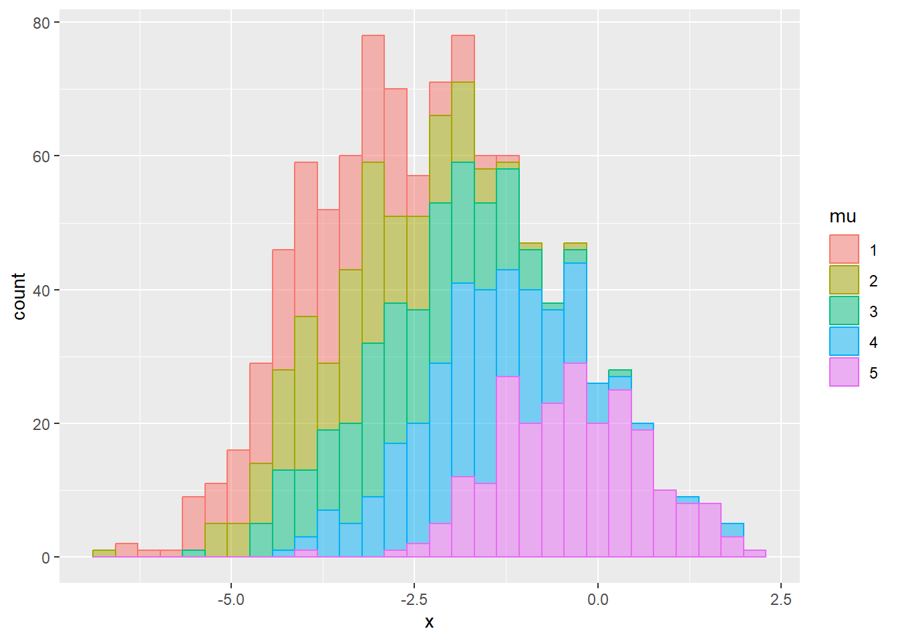
#Funcion para calcular el ELBO#
ELBO=function(mk,sk2,phis){
t = sk2+mk^2
a = -(1/(2*sigma^2))*sum(t)
b = 2*sum(sweep(sweep(phis,MARGIN = 2,mk,'*'),MARGIN = 1,x,'*'))-0.5*sum(sweep(phis,MARGIN = 2,t,'*' ))
c = -0.5*sum(log(2*pi*sk2))
d = sum(phis*log(phis))
return(a+b+c+d)
}
#creamos una lista de data.frames para poder dibujar las distintas iteraciones del ELBO
lista_df <- list()
#Realizamos el algoritmo CAVI 5 veces para comparar su convergencia.
for (z in 1:5){
### Algoritmo CAVI ###
mk= rnorm(K) #Generamos la muestra inicial
sk2=rgamma(K,5) #Varianzas aleatorias positivas
phis=rdirichlet(n,c(1,1,1,1,1)) #Asignaciones aleatorias
iter=30 #Iteraciones
elbos=rep(NA,iter+1) #Inicializamos el ELBO
elbos[1]=ELBO(mk,sk2,phis)
#Con las ecuaciones obtenidas anteriormente realizamos hasta la convergencia del ELBO
#o hasta llegar al numero de iteraciones
for (i in 1:iter){
phis.new=matrix(nrow=n,ncol = K)
#Actualizamos las asignaciones
for (j in 1:n){
phis.new[j,]=exp(x[j]*mk-0.5*(sk2+mk^2))
phis.new = phis.new/rowSums(phis.new)
}
phis=phis.new
mk.new=rep(NA,K)
sk2.new=rep(NA,K)
#Actualizamos los componentes de la mezcla
for (k in 1:K){
sk2.new[k] = 1/(1/sigma^2+sum(phis[,k]))
mk.new[k] = sk2.new[k]*sum(phis[,k]*x)
}
sk2=sk2.new
mk=mk.new
#Calculamos el ELBO y comprobamos su convergencia.
elbos[i+1]=ELBO(mk,sk2,phis)
if(z==1){
cat("Iteracion: ",i, "Diferencia de ELBO: ",abs(elbos[i+1]-elbos[i]),"\n")
}
if (abs(elbos[i+1]-elbos[i])<0.1) break
}
#Anadimos los datos a la lista de los data.frame
lista_df[z] <- list(data.frame(Iter = seq(1, i, 1), ELBO = elbos[1:i]))
}Iteracion: 1 Diferencia de ELBO: 11206.89
Iteracion: 2 Diferencia de ELBO: 1344.463
Iteracion: 3 Diferencia de ELBO: 303.6344
Iteracion: 4 Diferencia de ELBO: 73.54252
Iteracion: 5 Diferencia de ELBO: 21.17064
Iteracion: 6 Diferencia de ELBO: 7.611186
Iteracion: 7 Diferencia de ELBO: 3.78807
Iteracion: 8 Diferencia de ELBO: 2.506851
Iteracion: 9 Diferencia de ELBO: 1.928397
Iteracion: 10 Diferencia de ELBO: 1.587544
Iteracion: 11 Diferencia de ELBO: 1.360781
Iteracion: 12 Diferencia de ELBO: 1.204313
Iteracion: 13 Diferencia de ELBO: 1.093541
Iteracion: 14 Diferencia de ELBO: 1.01127
Iteracion: 15 Diferencia de ELBO: 0.945631
Iteracion: 16 Diferencia de ELBO: 0.8890867
Iteracion: 17 Diferencia de ELBO: 0.837324
Iteracion: 18 Diferencia de ELBO: 0.7881786
Iteracion: 19 Diferencia de ELBO: 0.7407767
Iteracion: 20 Diferencia de ELBO: 0.6949343
Iteracion: 21 Diferencia de ELBO: 0.6507811
Iteracion: 22 Diferencia de ELBO: 0.6085442
Iteracion: 23 Diferencia de ELBO: 0.5684382
Iteracion: 24 Diferencia de ELBO: 0.530618
Iteracion: 25 Diferencia de ELBO: 0.4951666
Iteracion: 26 Diferencia de ELBO: 0.4621
Iteracion: 27 Diferencia de ELBO: 0.4313795
Iteracion: 28 Diferencia de ELBO: 0.4029257
Iteracion: 29 Diferencia de ELBO: 0.3766308
Iteracion: 30 Diferencia de ELBO: 0.3523696 Generamos un data.frame completo y dibujamos el ELBO y el numero de iteraciones.
df_completo <- bind_rows(lista_df, .id = "ID")
ggplot(data = df_completo, aes(x = Iter, y = ELBO, color = ID)) +geom_line(linewidth=1.5) +
labs(title="Convergencia del ELBO ", x="Iteraciones", y="ELBO")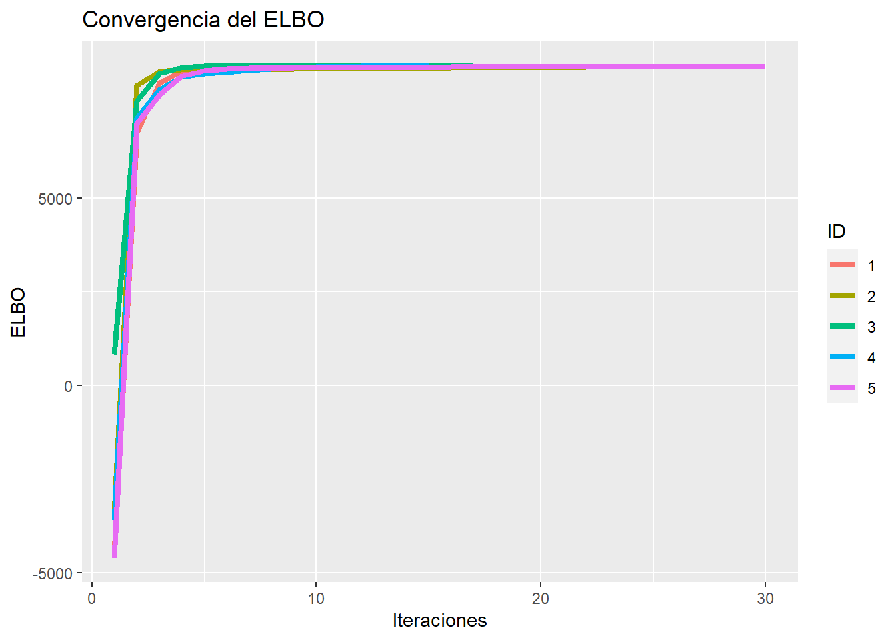
Ordenamos las medias y las comparamos con las originales
mk=sort(mk);
mk[1] -3.7376391 -3.1900522 -2.3752398 -1.5089553 -0.2703252mu[1] -3.6680851 -3.2648079 -2.6094741 -1.7623829 -0.4297341Dibujamos los datos con las medias que hemos calculado previamente.
ggplot(df,aes(x=x,color=mu,fill=mu)) + geom_histogram(alpha=0.5)+
geom_vline(data=data.frame(x=mk),aes(xintercept=x, color=as.factor(c(1,2,3,4,5))),linetype="dashed",size=1)Warning: Using `size` aesthetic for lines was deprecated in ggplot2 3.4.0.
ℹ Please use `linewidth` instead.`stat_bin()` using `bins = 30`. Pick better value with `binwidth`.Comprobemos como generamos los datos con las medias obtenidas
cs2 = rcat(n, rep(1/K,K)) # Asignaciones
xnew = rnorm(n,mean=mk[cs2], sd=1) #Generamos los datos,
df2 = data.frame(x=xnew, mu=as.factor(cs2))
ggplot(df2, aes(x = x, color = mu, fill = mu)) + geom_histogram(alpha = 0.5) `stat_bin()` using `bins = 30`. Pick better value with `binwidth`.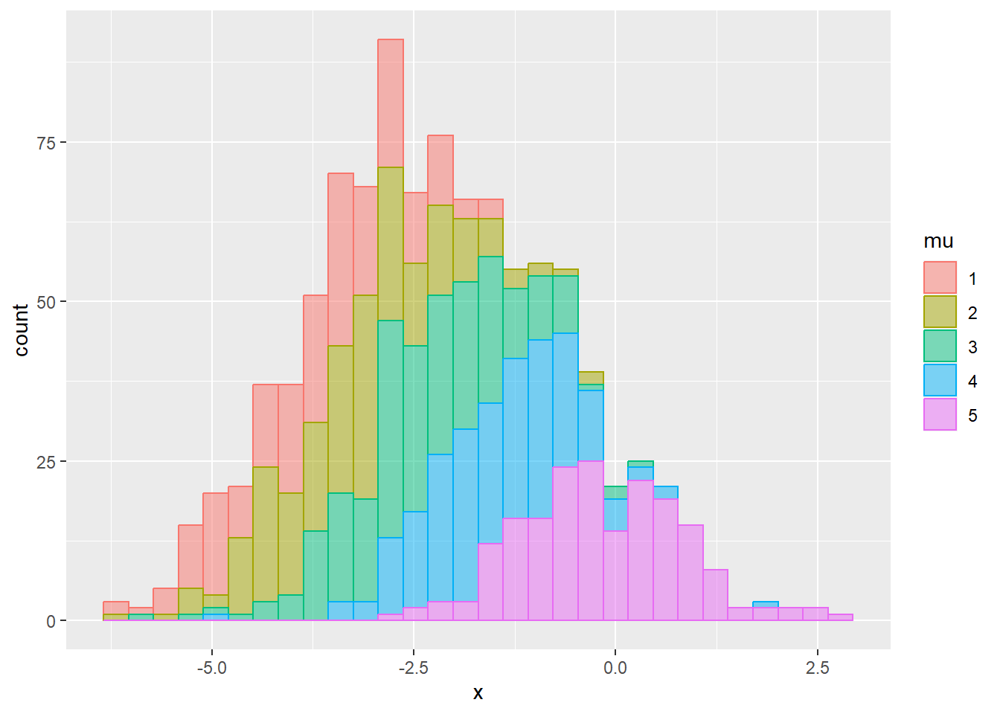
13.2 Mezcla de gaussianas en dos dimensiones
Los hiperparámetros en este caso serán:
sigma = 4 #Varianza de mu
K = 5 #Numero de clusters o grupos
n = 1000 #Numero de observacionesAdaptaremos nuestro algortimo para los datos multivariantes.
#Generamos los datos que ahora son datos multivariantes.
I=diag(c(1,1))
mu = rmvnorm(K, mean=c(0,0), sigma = sigma^2*I)
cs=rcat(n, rep(1/K,K))
x=mu[cs,] + rmvnorm(n, mean=c(0,0),sigma = I)
#Funcion para ordenar las medias segun su norma, nos servira para compararlas despues
ordenarmedias = function(medias){
normas = apply(medias, 1, function(x) sqrt(sum(x^2)))
medias = medias[order(normas),]
return(medias)
}
#Dibujemos los datos
df = data.frame(x = x, mu = as.factor(cs))
ggplot(df, aes(x = x[,1], y = x[,2], color = mu, fill = mu)) + geom_point()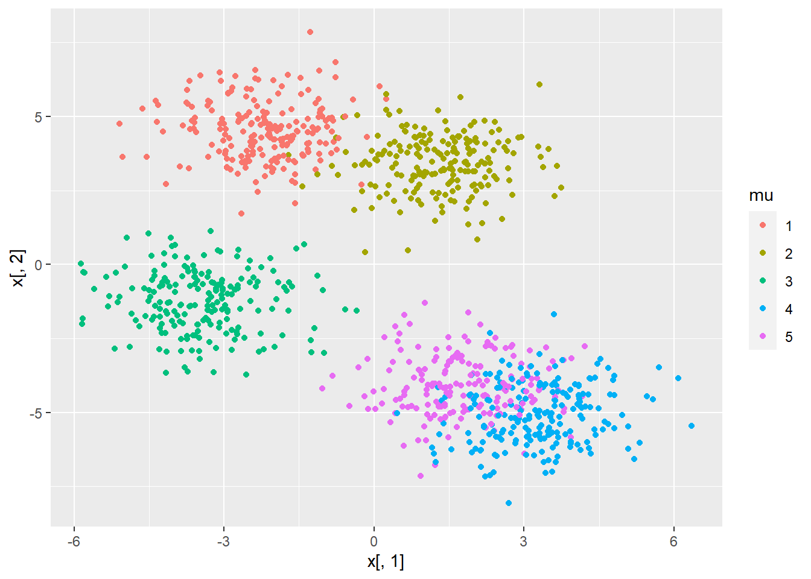
###Algoritmo CAVI###
#Generamos los datos iniciales pero teniendo en cuenta que ahora son multivariantes,
#por tanto tomamos I
mk = rmvnorm(K, mean = c(0,0), sigma = I)
sk2 = rgamma(K, 5)
phis = rdirichlet(n, c(1,1,1,1,1))
#Funcion para dibujar los datos y las medias
plotClusters = function(){
ggplot(df, aes(x = x[,1], y = x[,2], color = mu, fill = mu)) +
geom_point(alpha = 0.3) +
geom_point(data = data.frame(x1 = mk[,1], x2 = mk[,2], mu = as.factor(c(3,5,4,2,1))),
aes(x = x1, y = x2, color = mu), size = 3, colour = "black") +
geom_point(data = data.frame(x1 = mk[,1], x2 = mk[,2], mu = as.factor(c(3,5,4,2,1))),
aes(x = x1, y = x2, color = mu), size = 2) +
geom_circle(data = data.frame(x1 = mk[,1], x2 = mk[,2], mu = as.factor(c(3,5,4,2,1))),
aes(x0 = x1, y0 = x2, r = sigma/2, fill = mu, x = x1, y = x2), color = "black",alpha = 0.2)
}
plotClusters()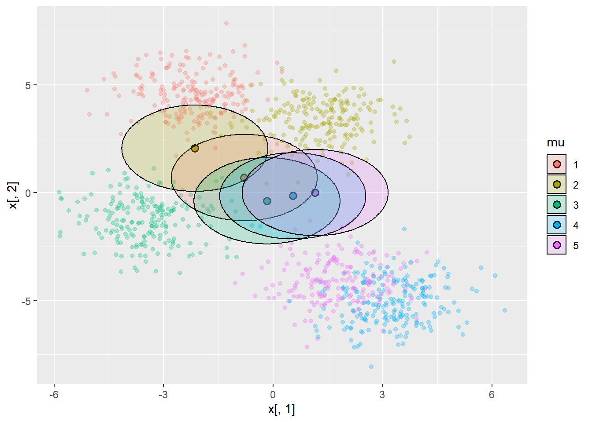
#Numero de iteraciones
iter = 50
#Realizamos el algoritmo hasta llegar a las 30 iteraciones
#Notemos que ahora no son escalares y por tanto tenemos que tener cuidado al multiplicar vectores.
for (i in 1:iter){
phis.new = matrix(nrow = n, ncol = K)
for (j in 1:n){
for (k in 1:K){
phis.new[j,k] = exp(t(x[j,]) %*% mk[k,] - 0.5 * (2 * sk2[k] + t(mk[k,])
%*% mk[k,]))
}
phis.new = phis.new / rowSums(phis.new)
}
phis = phis.new
mk.new = matrix(rep(NA, K * 2), ncol = 2)
sk2.new = rep(NA, K)
for (k in 1:K){
sk2.new[k] = 1 / (1 / sigma^2 + sum(phis[,k]))
mk.new[k,] = sk2.new[k] * colSums(phis[,k] * x)
}
sk2 = sk2.new
mk = mk.new
#Para guardar la evolucion tras 5 iteraciones
if (i == 5){
df_iter5 <- df
df_iter5$mu <- as.factor(colSums(phis == max.col(phis)))
mk_iter5 <- ordenarmedias(mk)
}
#Para guardar la evolucion tras 20 iteraciones
if (i == 20){
df_iter20 <- df
df_iter20$mu <- as.factor(colSums(phis == max.col(phis)))
mk_iter20 <- ordenarmedias(mk)
}
}Para dibujar como estan las medias tras 5 iteraciones
ggplot(df_iter5, aes(x = x[,1], y = x[,2], color = mu, fill = mu)) +
geom_point(alpha = 0.3) +
geom_point(data = data.frame(x1 = mk_iter5[,1], x2 = mk_iter5[,2], mu = as.factor(c(4,1,3,2,5))),
aes(x = x1, y = x2, color = mu), size = 3, colour = "black") +
geom_point(data = data.frame(x1 = mk_iter5[,1], x2 = mk_iter5[,2], mu = as.factor(c(4,1,3,2,5))),
aes(x = x1, y = x2, color = mu), size = 2) +
geom_circle(data = data.frame(x1 = mk_iter5[,1], x2 = mk_iter5[,2], mu = as.factor(c(4,1,3,2,5))),
aes(x0 = x1, y0 = x2, r = sigma/2, fill = mu, x = x1, y = x2), color = "black", alpha = 0.2)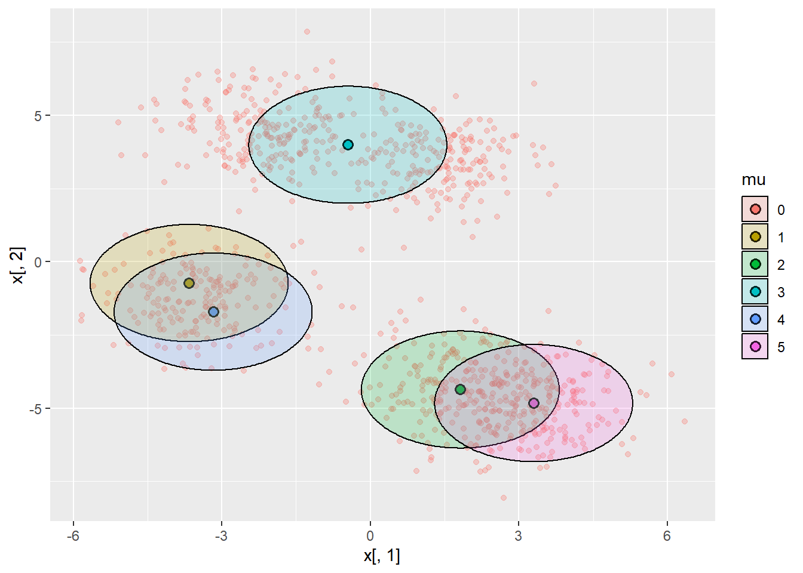
Para dibujar como estan las medias tras 20 iteraciones
ggplot(df_iter20, aes(x = x[,1], y = x[,2], color = mu, fill = mu)) +
geom_point(alpha = 0.3) +
geom_point(data = data.frame(x1 = mk_iter20[,1], x2 = mk_iter20[,2], mu = as.factor(c(4,1,3,2,5))),
aes(x = x1, y = x2, color = mu), size = 3, colour = "black") +
geom_point(data = data.frame(x1 = mk_iter20[,1], x2 = mk_iter20[,2], mu = as.factor(c(4,1,3,2,5))),
aes(x = x1, y = x2, color = mu), size = 2) +
geom_circle(data = data.frame(x1 = mk_iter20[,1], x2 = mk_iter20[,2], mu = as.factor(c(4,1,3,2,5))),
aes(x0 = x1, y0 = x2, r = sigma/2, fill = mu, x = x1, y = x2), color = "black", alpha = 0.2)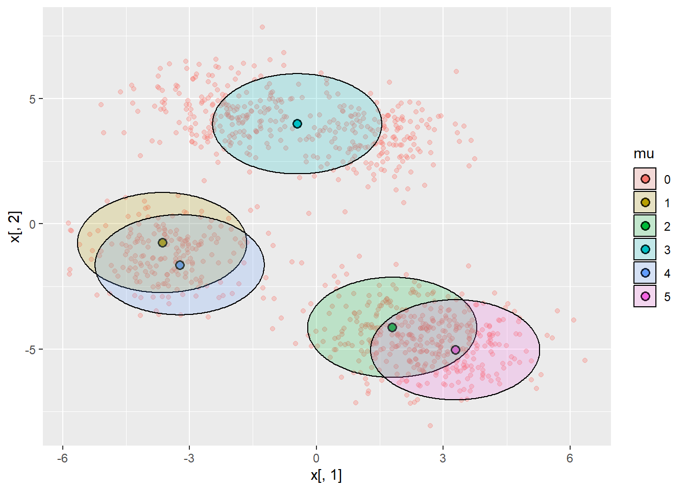
plotClusters()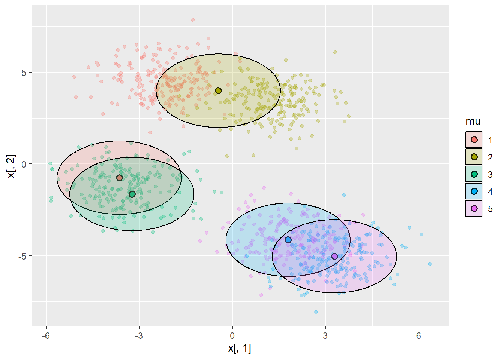
Comparamos el resultado con el algoritmo kmeans Dibujamos donde se encuentran las medias artificiales, las reales y las kmedias.
kmeans_result <- kmeans(x, centers = 5)
plot(mk,col="red",xlab = "x1",ylab = "x2");
points(mu,col="blue")
points(kmeans_result$centers,col="green")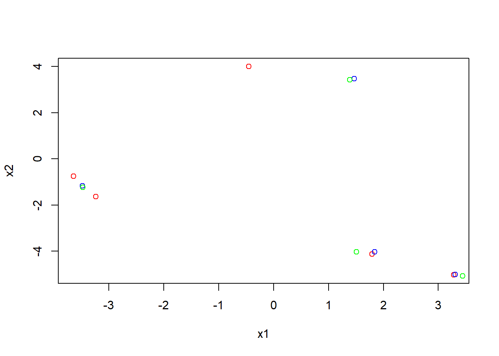
13.3 Análisis de imágenes
Por último, intentaremos agrupar unas imágenes según su frecuencia de colores. Las imágenes provienen de kaggle y son 8000 imágenes de bosques, playas, desiertos y glaciares.
Utilizando nuestro algoritmo podemos estudiar los histogramas concatenados de rojo, verde y azul de las imágenes.
Estos histogramas serán nuestros nuevos datos multivariantes a los que aplicaremos el modelo. 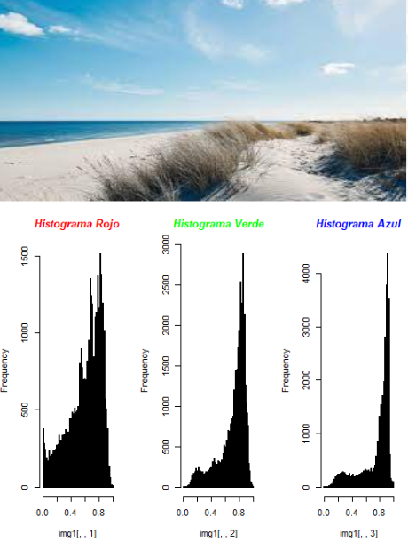
Tras estandarizar los datos y aplicar el modelo obtenemos los siguientes 4 histogramas tipo.
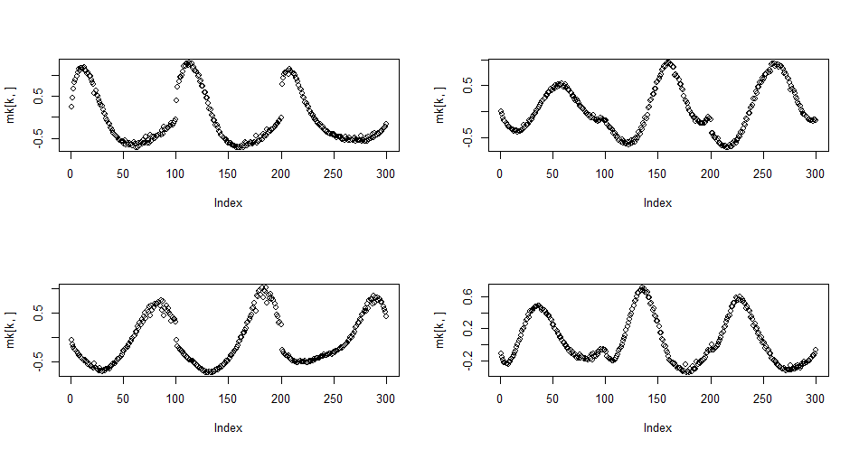
14 Inferencia variacional estocástica
La inferencia variacional estocástica es un método que nos permite escalar la inferencia variacional a grandes conjuntos de datos.
El método consistirá en:
Muestrear un dato del conjunto total de datos.
Utilizar los parámetros globales actuales para calcular los parámetros locales óptimos para el dato que hemos muestreado.
Ajustar los parámetros globales actuales de manera apropiada.
Actualizaremos el valor del parámetro siguiendo ascenso de gradiente: \[\theta^{(t+1)}=\theta^{(t)} + \gamma_t \cdot \nabla_{\theta}ELBO^{(t+1)}\] Por otro lado:\ \[ELBO \approx \frac{1}{N}\sum_{i=1}^N \log p(x|z_i)p(z_i)-\log q_{\theta}(z_i).\] De esta forma sustituimos los sumatorios previos.